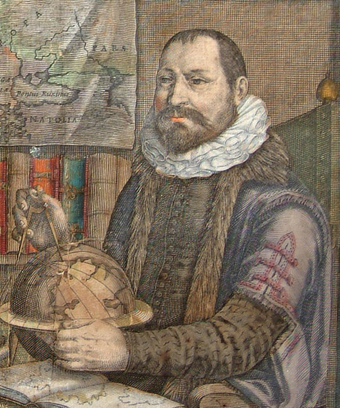
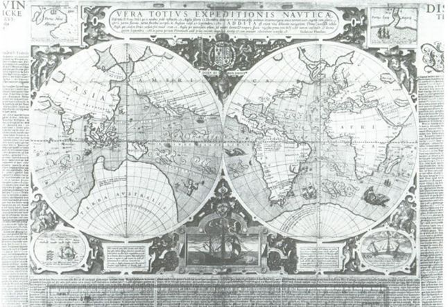
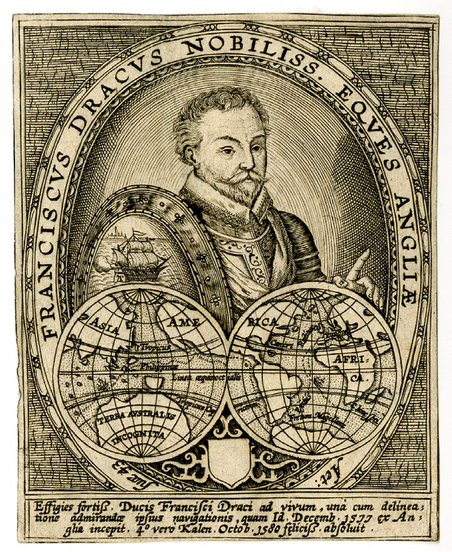
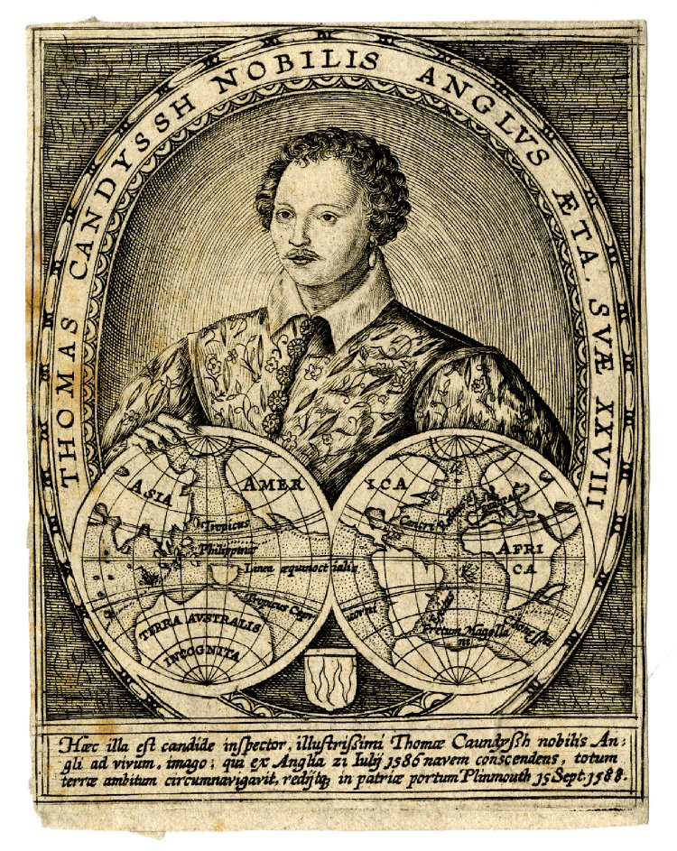
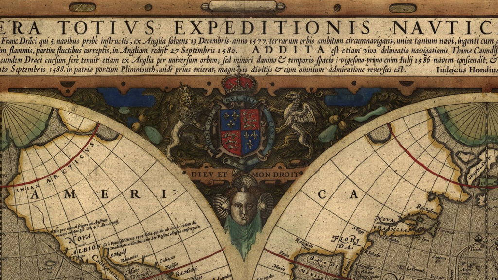
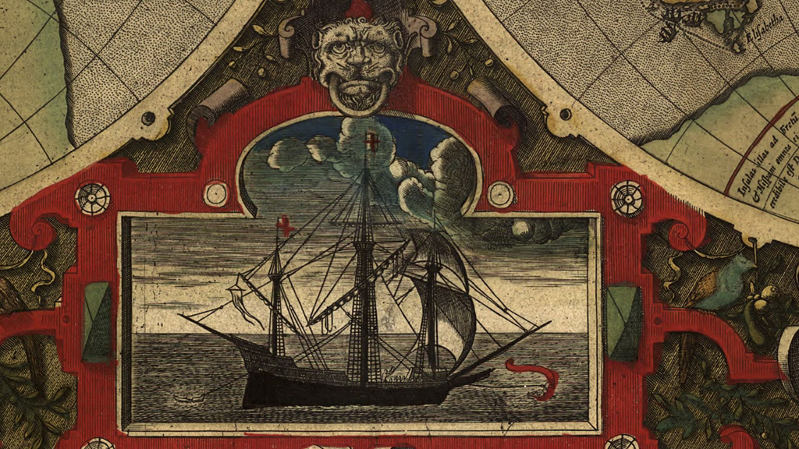
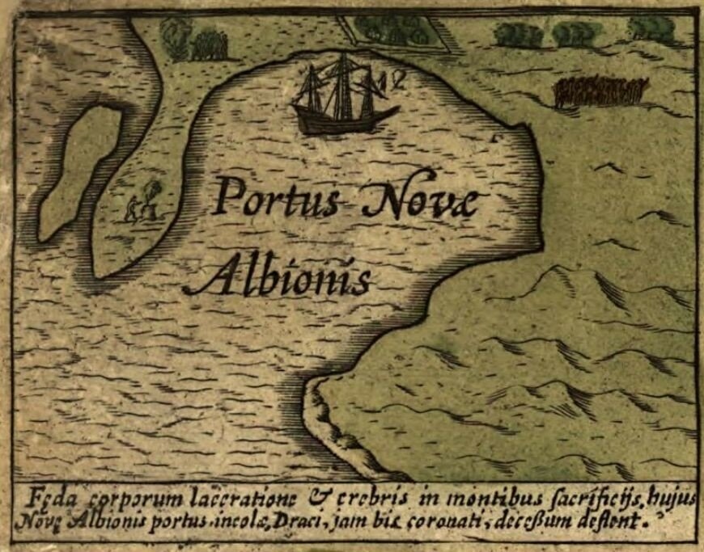
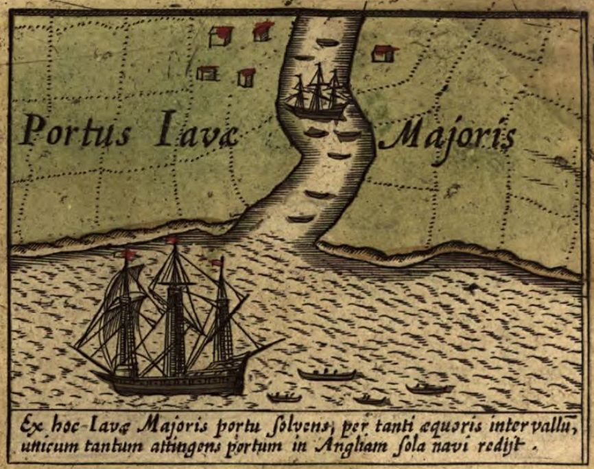
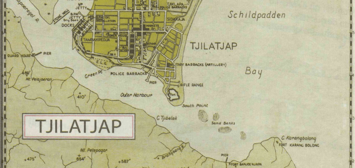
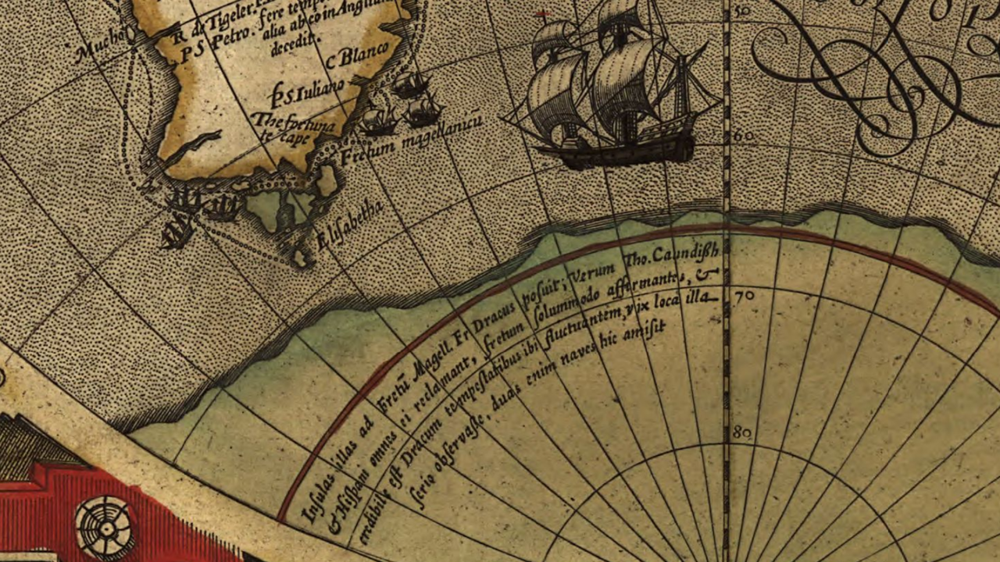

Карта Хондиуса
Лиризм, на всё способный,
Знать, у меня в крови;
О Нестор преподобный,
Меня ты вдохнови.
А. К. Толстой. История государства российского от Гостомысла до Тимашева
Историю карт кругосветной экспедиции Дрейка, так или иначе связанных с подлинной картой похода, завершим рассказом о карте Хондиуса.
Йодокус Хондиус (он же Йоссе де Хондт (Josse de Hondt, 1563-1612) — фламандский картограф и издатель атласов и карт, ученик Ричард Хаклюйта, знаменит своими земными и небесными глобусами и атласами.

Портрет Иодокуса Хондиуса, фрагмент группового портрета Меркатор-Хондиус. Художник Colette Hondius-v d Keere (1619)
Интересующая нас карта внешне отличается от первых двух. Во-первых, она исполнена в виде полушарий. И, во-вторых, экземпляр карты в Библиотеке Британского музея, с которого и началось ее исследоване, был смонтирован вместе с текстом на голландском языке, представлявшим собой компиляцию «The Famous Voyage» и дневников путешествия Кэвендиша , изданных Хаклюйтом. По этой причине карта получила название The Drake Broadside map (существует распространенное мнение, что это название карта получила из-за вставок в углах листа; это неверно, такие вставки имеют и другие карты).
Мне не удалось найти хорошего изображения карты Хондиуса с текстовым обрамлением. Представление о нем можно получить по этой иллюстрации из книги Sir Francis Drake and the Famous Voyage, 1577-1580.

Интересной особенностью голландского текста, сопровождающего экземпляр из Британской библиотеки, являются исполненные Хондиусом портрет Дрейка в возрасте 43 лет

и портрет Кэвендиша в возрасте 28 лет

Изучение сопутствующего голландского текста, опубликованного в Амстердаме в 1596 году, позволяет отнести появление карты к 1595 году. Хотя некоторые косвенные свидетельства указывают на вероятность ее первого появления еще в 1590 г. Всего сохранилось шесть оттисков этой карты, причем три из них отпечатаны в Лондоне (вероятно, в 1590 году), а три – в Амстердаме (1595 г.)
Хотя у карты Хондиуса имеется много совпадений с двумя ранее рассмотренными картами экспедиции Дрейка, она содержит несколько существвенных отличий. Карта Хондиуса исполнена в виде двух полушарий, а не на плоском листе, как первые две. Появившееся свободное пространство заполнено текстом легенды и декоративыми элементами.
The Drake Broadside map. (Кликабельно)
В центре наверху появляется изображение королевы под королевским гербом. На предыдущих двух картах его не было, хотя известно, что оно имелось на подлинной карте Дрейка из дворца Whitehall. Видимо оттуда оно и было скопировано на карту Хондиуса.

На полях карты имеется пять виньеток. Изображения в нижних углах совпадают с аналогичными элементами карт Дрейка-Меллона и ван Сайпа. Но, в отличие от них, внизу в центре появляется изображение корабля, скорее всего это Золотая лань.

В верхних углах карты мы видим два топографических плана: "Portus Novae Albionis,"

и "Portus javae Majoris."

Эти изображения примечательны тем, что являются единственными дошедшими до нас печтатными планами местности, составленными эксредицией Дрейка: яванский порт Чилачап (Tjilatjap)

с его узким входом в гавань, и порт Nova Albion, в котором Золотая лань простояла пять недель.
Нас, понятно, сейчас больше интересует южная оконечность Америки.

В легенде, относящейся к Огненной Земле (написана вдоль дуги параллели), Хондиус отмечает, что хотя Дрейк поместил здесь острова, Кэвендиш и все испанские мореплаватели отрицают их наличие, считают, что ничего кроме пролива там нет. Сам Хондиус первоначально считал так же. Но составляя легенду к карте, он воспользовался дневниками Флетчера "The Famous Voyage" и изменил изображение. Однако с годами росли сомнения Хондиуса в открытиях, сделанных Дрейком у южной оконечности Америки. На изданной, предположительно, в 1597 году в Амстердаме так называемой Карте христианского рыцаря (the Christian Knight map: “Typus totius Orbis Terrarum, in quo & Christiani militis certamen super terram . . . graphice designatur, a Iud. Hondio caelatore,")
Карта христианского рыцаря. Хондиус, 1597 (Кликабельно)
открытия Дрейка не показаны: Огненная Земля здесь – часть Южного континента, на котором показан христианский рыцарь, сражающийся с силами тьмы. Видимо, как считают исследователи, Хондиус здесь попал под испанское влияние. Вернувшись в Нидерланды, Хондиус стал всячески продвигать идею о том, что первооткрывателями прохода между Южным материком и Огненной Землей стали Лемер и Схаутен в 1617 году (см. наш пост на эту тему).
Туман, скрывающий истинную картину событий, не развеялся по сей день, так как до сих пор не удалось найти подлинных документов кругосветной экспедиции Дрейка. Будем искать, как оптимистически выразился Семен Семеныч Горбунков.